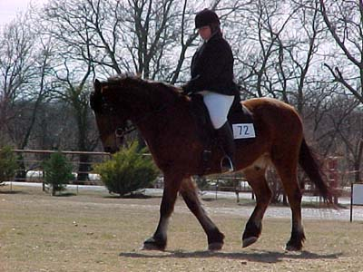
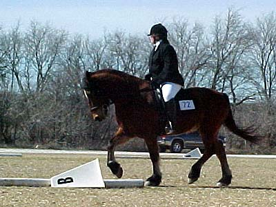
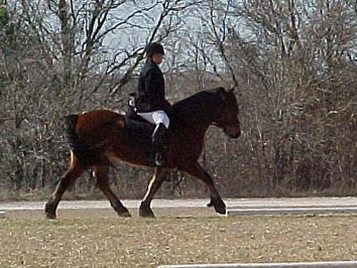
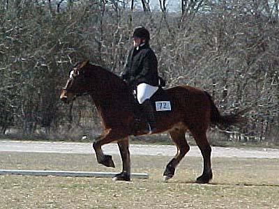
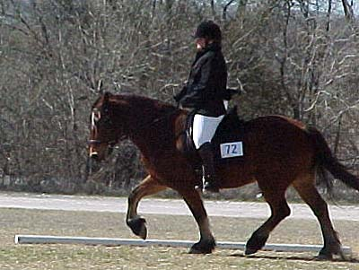
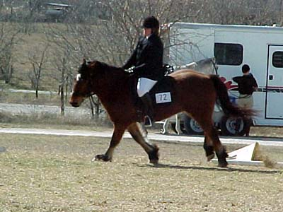

Sally getting 2nd
Place with Thuy in Novice Test C

Warming up before the class.

It was so windy they knocked over
the letters before the class so it wouldn't happen during the test.
Thuy listened during the test and consistently
gave at the trot. Something they've been working on.

Nicely forward, just a little in front
of the vertical. (I typically don't mind a little in front of the vertical,
but usually when Thuy does it, he's bracing against your hands and hollowing)

I'm sure he was a little angry. The
head wind was horrible in that direction...

Softening again.

The comment the judge made was to
ride the canter and balance the horse. This shows what she meant.